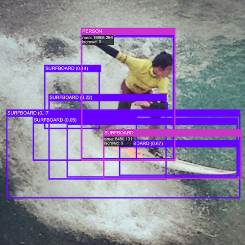
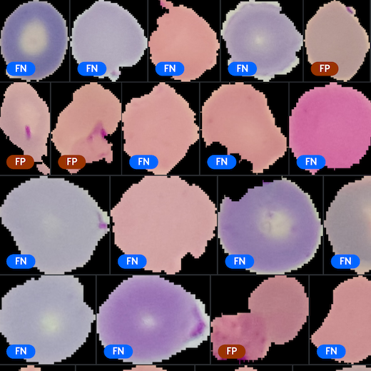
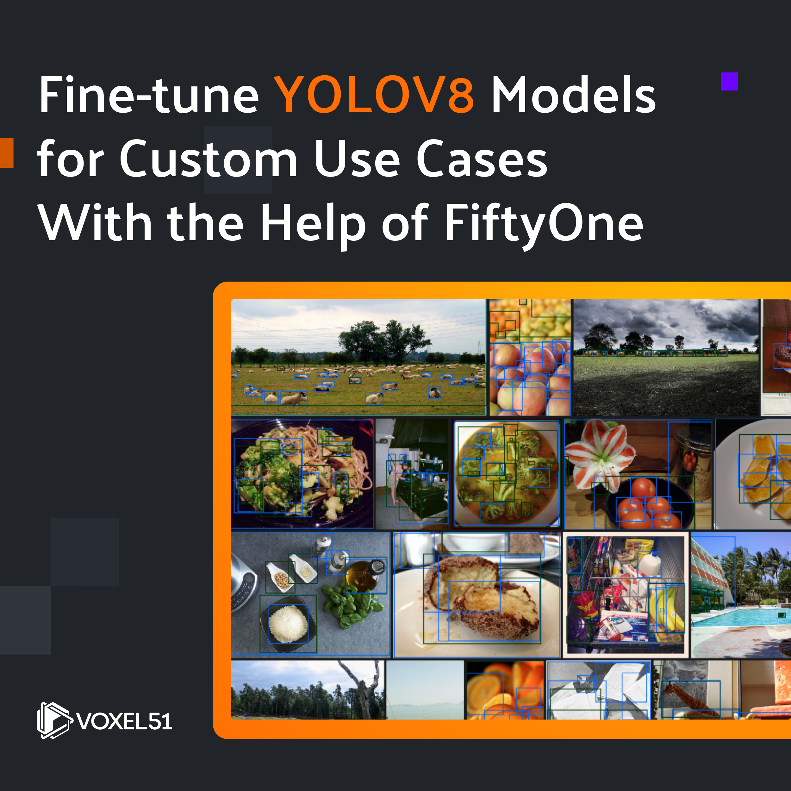
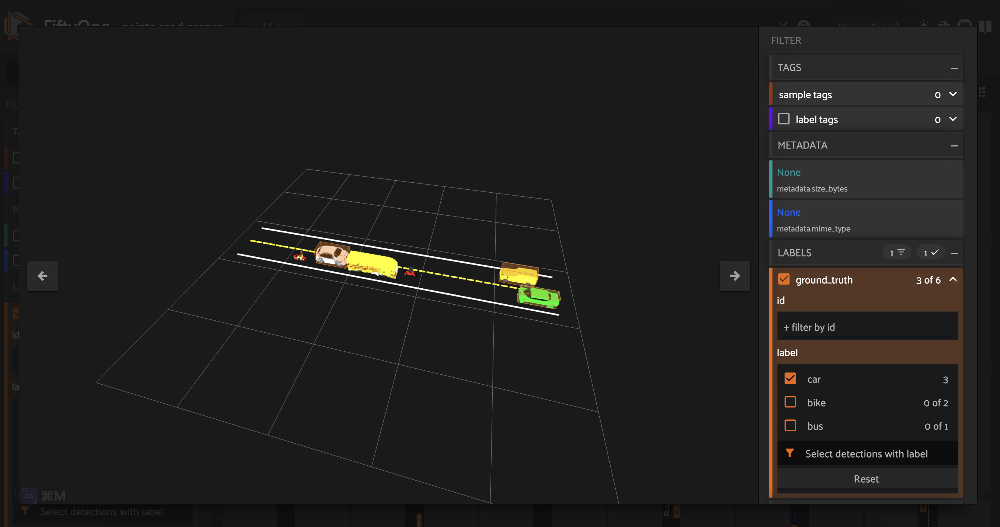
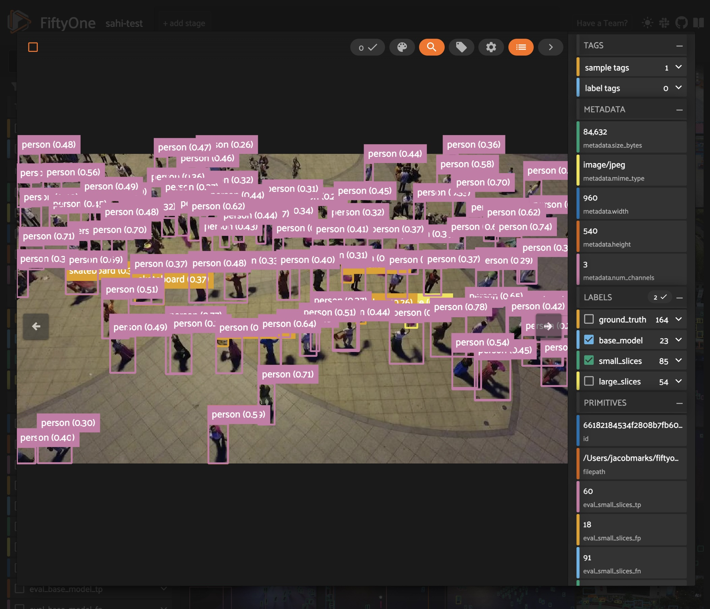
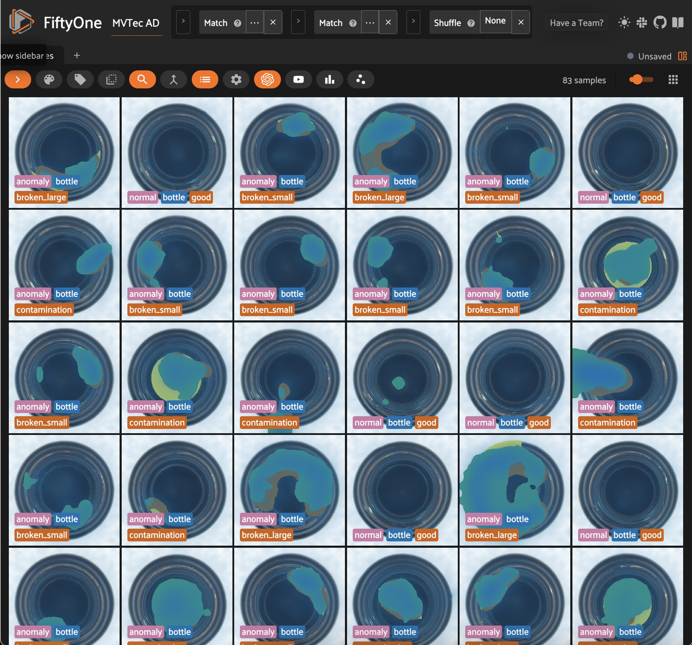

FiftyOne Tutorials ¶¶
Each tutorial below is a curated demonstration of how FiftyOne can help refine your datasets and turn your good models into great models.
pandas-style queries in FiftyOne¶
Translate your pandas knowledge to FiftyOne. This tutorial gives a side-by-side comparison of performing common operations in pandas and FiftyOne.
Filtering,Dataset-Evaluation

Evaluating object detections¶
Aggregate statistics aren't sufficient for object detection. This tutorial shows how to use FiftyOne to perform powerful evaluation workflows on your detector.
Model-Evaluation

Evaluating a classifier¶
Evaluation made easy. This tutorial walks through an end-to-end example of fine-tuning a classifier and understanding its failure modes using FiftyOne.
Model-Evaluation

Using image embeddings¶
Visualize your data in new ways. This tutorial shows how to use FiftyOne's powerful embeddings visualization capabilities to improve your image datasets.
Visualization,Brain,Embeddings

Annotating with CVAT¶
So you've loaded and explored your data in FiftyOne... but now what? See how to send it off to CVAT for annotation in just one line of code.
Annotation,Dataset-Evaluation

Annotating with Labelbox¶
Unlock the power of the Labelbox platform. See how you can get your FiftyOne datasets annotated with just one line of code.
Annotation,Dataset-Evaluation

Training with Detectron2¶
Put your FiftyOne datasets to work and learn how to train and evaluate Detectron2 models directly on your data.
Model-Training,Model-Evaluation

Downloading and evaluating Open Images¶
Expand your data lake and evaluate your object detection models with Google's Open Images dataset and evaluation protocol, all natively within FiftyOne.
Dataset-Evaluation,Model-Evaluation,Dataset-Zoo

Exploring image uniqueness¶
Your models need diverse data. This tutorial shows how FiftyOne can remove near-duplicate images and recommend unique samples for model training.
Dataset-Evaluation,Brain

Finding classification mistakes¶
Better models start with better data. This tutorial shows how FiftyOne can automatically find label mistakes in your classification datasets.
Dataset-Evaluation,Brain

Finding detection mistakes¶
How good are your ground truth objects? Use the FiftyOne Brain's mistakenness feature to find annotation errors in your object detections.
Dataset-Evaluation,Brain

Nearest Neighbor Embeddings Classification with Qdrant¶
Easily pre-annotate your FiftyOne datasets using approximate nearest neighbors search on embeddings with Qdrant.
Dataset-Evaluation,Model-Evaluation,Embeddings

Fine-tuning YOLOv8 model predictions¶
Visualize and evaluate YOLOv8 model predictions before fine-tuning for your custom use case.
Model-Evaluation

Build 3D point cloud datasets with Point-E¶
Lidar is expensive. This tutorial shows how FiftyOne can help you construct high quality 3D point cloud datasets using Point-E point cloud models.
Dataset-Curation,Filtering,Visualization

Monocular Depth Estimation with Hugging Face¶
Metrics for monocular depth estimation can be deceiving. Run MDE models on your data and visualize their predictions with FiftyOne.
Model-Evaluation,Visualization

Visualizing Data with Dimensionality Reduction¶
Compare and contrast dimensionality reduction techniques for visualizing your data in FiftyOne.
Brain,Visualization

Zero-Shot Image Classification¶
Run and evaluate zero-shot image classification models with OpenCLIP, Hugging Face Transformers, and FiftyOne.
Filtering,Model-Evaluation,Model-Zoo

Augmenting Datasets with Albumentations¶
Learn how to apply and test out different augmentations on your datasets using FiftyOne and Albumentations.
App,Dataset-Curation,Visualization

Clustering Images with Embeddings¶
Use embeddings to cluster images in your dataset and visualize the results in FiftyOne.
App,Brain,Dataset-Curation,Embeddings,Visualization

Small Object Detection with SAHI¶
Detect small objects in your images with Slicing-Aided Hyper-Inference (SAHI) and FiftyOne.
Model-Evaluation,Model-Zoo

Anomaly Detection with Anomalib¶
Detect anomalies in your images with Anomalib and FiftyOne.
Embeddings,Model-Evaluation,Model-Training,Visualization

Note
Check out the fiftyone-examples repository for more examples of using FiftyOne!